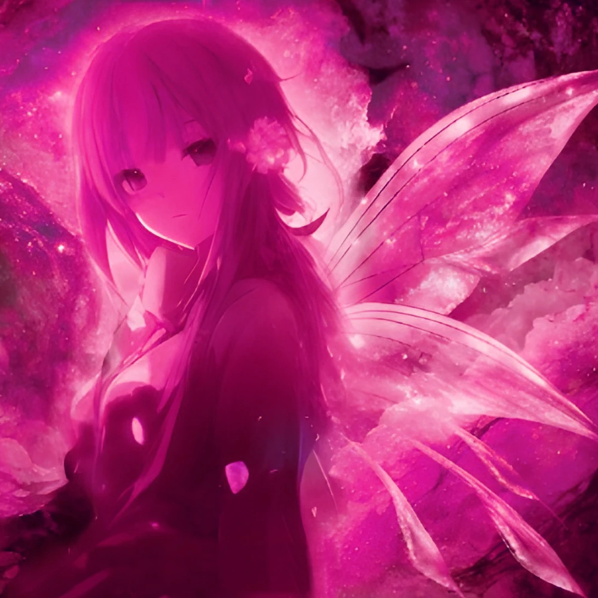

Satelia
{kind=link}

-
Nom: Satelia
Surnom: L'Enfant des Étoiles
Grade: -
Race: Fées
Particules: Plantes
Arme: Rapière
Âge: -
Taille: 166cm
Poids: 54kg
Cheveux: Rose
Yeux: Mauve
Présentation
Satelia est une civile qui vit dans les monts Nod au sud-est du territoire Ansicht. Elle possède un véritable don pour le chant. [source]
Apparences
Satelia est une jeune femme qui possède de magnifiques cheveux longs d’une teinte rose, mais si claire, qu’on pourrait la confondre avec du blanc. Elle s'habille avec un ensemble mauve et possède deux barrettes blanches dans ses cheveux. Satelia ne montre pas beaucoup ses sentiments et ses réponses sont plutôt monotones. Elle est calme et distante, préférant rester dans son côté, mais elle s'épanouit dans la nature et aime sincèrement les membres de son village. [source]
Histoire
Satelia est une jeune femme mystérieuse qui a un lien avec le temple de l'ombre des monts Nod et qui va se retrouver sur la route d'Utteros Streik. De par leur rencontre fortuite, la jeune femme va grandement impacter la vie du jeune Nate Ansicht, le Prince Maudit. [source]
Apparition
Satelia apparaît dans le chapitre 19, L'Enfant Des Étoiles, dans la deuxième partie du 2ème livre de la Guerre de l'Hérésie, L'Aube d'un Idéal. Il s'agit d'un des personnages originels écrit par Quentin Nater.
L'Enfant Des Étoiles [SPOIL]
Satelia est l'Enfant des Étoiles, la gardienne du savoir et la dernière représentante du peuple des Fées qui a immigré sur Ylluf après la guerre sur Pteria entre les Escouades Divines et l'Union Royale. À la suite des accords entre les Fées et un ancien Empereur Streik, Satelia, qui a été élevée par des réfugiés Liphs, est la gardienne secrète de la Pyramide de la Culpabilité et du temple de l'ombre.